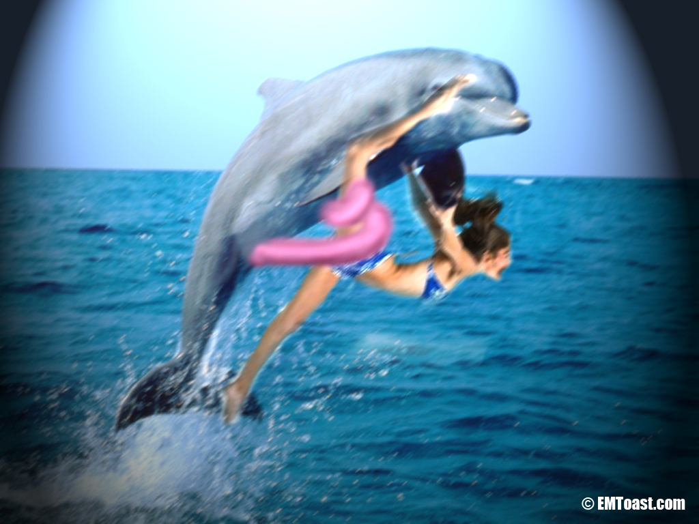

Dolphin Rape Caught on Film

Australian tourist, Karl Jurg, captured a horrifying event while vacationing in Florida.
Jurg told reporters, “It was a nice day, the water was calm. The captain took us far out so that we could scuba and swim and maybe see some fish. I don’t much go for the water so I was taking some pictures of the other people on the boat as they were jumping into the water. Just as one woman jumped off the boat into the water a dolphin shot straight out of the water and grabbed her and took her under, I just snapped off a couple shots and I was amazed that I actually got it on film. It’s weird but it was kind of beautiful the way it grabbed her, it was so graceful. Poor girl still hasn’t been found though.”
The woman taken by the dolphin was 37 year old pilates instructor and professional dancer, Tanya Halerfan of Liverpool, NY . Authorities are still looking for Halerfan.
Bob Grunderson of the National Coast Guard made a statement to the press stating, “Our search for Miss Halerfan or her remains will continue though we hold no hope of finding either. In past experience with cases of dolphin kidnapping and sexual assault the victims are usually never found.”
Researchers studying dolphin behavior have been noticing an alarming trend in recent years. They have discovered rogue packs of adult male dolphins gang raping swimmers in open waters. Human decoys fitted with tracking devices have been dumped in open waters and observed from helicopter.
Scott Randleston of the Dolphin Research Institute of Boca Raton, has been studying dolphin behavior for 17 years, and came up with the decoy program. “In every case the decoy was set upon in a short time by groups of dolphins ranging from 8 to 20 young males. It seems there are gangs of dolphin predators roaming the open waters looking for humans to sexually assault. The dolphins in each case were observed circling the swimmer as one of the group grabbed them with their penis and dragged them under, then the others followed. You see dolphins have a prehensile penis, it is full of powerful muscles and they can wrap it around objects, such as a human wrist, ankle, neck, or waist. One could compare it to a boa constrictor or an elephant trunk….The decoys never resurfaced in any of the studies…. We tracked one of the decoys to an underwater cave where it had been repeatedly raped and torn apart by the dolphins. ”
There are at least 14 cases of dolphin rape reported each year in the United States, these usually occur near the shore where victims are able to escape before they can be dragged into a dolphin rape cave. There is no real estimate of how many deaths are the result of dolphin rape each year as many of these occur in open water where there are few eyewitnesses if any.
Authorities will continue the search for Halerfan until Wednesday, stating, “We believe this to be a reasonable time frame, if she were not killed in the attack it still means she will have been in open water without any sort of flotation device for more than 6 days and the likelihood of survival at that point is not possible.”
I thought this was going to be the actual film? So where is the movie? The photo looks photoshopped. Also no sign of the video on youtube or Karl Jurg. I did some research and could find no traces of Scott Randleston of the Dolphin Research Institute of Boca Raton. Also on the website of http://www.dolphins.org/marineed_schools.php there isn’t any mention of this event at all. Aside from all of this, I think you made up a name, took some photo from google of a dude wearing a Hawaiian shirt holding a camera and presto- We have Karl Jurg, ladies and gentlemen.
Thanks for causing a great amount of fear for no reason at all.
The detective skills exhibited by our visitors continues to amaze me. Are you sure you came to the right site? Anyway, if you look at the chromatic aberration around the dolphin’s body in the photograph, it’s quite obviously real. Look it up.
The picture of the guy belongs to Duane Hanson’s Man With Camera, 1991
http://www.villagevoice.com/2007-11-20/art/the-anxiety-of-realism/
ladies and gentlemen, your killer dolphin:
http://www.musicaecomputer.com/wallpapers/dolphins/dolphins0003.htm
Before he grabbed the girl.
well no where in this article did it state that the picture was an actual photo of the offending dolphin and victim. the photographer probably wanted a million dollars for the picture, just like if he had a picture of bigfoot, hes not going to give it out to just anybody! even though this site provides a great deal of news I don’t think they have a budget at as large as say fox news to be able to buy the actual photo. Atleast they are doing a service to humanity here and promoting dolphin rape awareness
Why did they photoshop out the dolphin’s long penis in that picture? (Probably to make it more family-friendly, I’m guessing.)
it was all fake, even the girl. look at the way the girl was grabbing the dolphin
It could not be more fake, yet hundreds of people search for dolphin rape every day. Were you one?
Yeah he’s been around a while I guess.
It really took you all that searching to realize this is just some idiot fucking with people?
I believe this article is referring to still photography film, not video footage. elusive creatures and actions are often only captured on still film and often grainy or blurry or very tiny and hard to see. I oftened wondered if that meant it was a hoax but it was explained to me God does this to plant the seeds of wonder, not doubt. so that we can remain innocent and wonder on his mysteries. praise his name and all his creations
You really believe This story. Rogue male dolphins out to rape swimmers. Good lord!! ?
I don’t believe it for a minute. Dolphin rape is a lie. Every time I try to delete this story from the site, Google keeps putting it back. I even filed a cease and resist order to youtube, but they still keep doing it.
Please read the disclaimer for this site: DISCLAIMER:
EMToast is a nonsensical publication intended for entertainment purposes only. All articles contained within EMToast are fiction.
Robyn. Thank you for being the voice of reason. I wish these dolphin haters would go to another site.
anyone with a brain would see that this story is made up lol otherwise it would’ve been in the news and papers and there is no trace of it on google and stating the obvious that photo is FAKE!! Do something better with your time!
making people aware of the horrors of the oceans…what could be more worthwhile than that. you will thank these folks one day when you suffer oceanic assault by these savage attackers
Savage attackers? They are animals! And we are humans! Humans are capable of much worse! In fact, we do much worse, every day! We murder, rape, take innocent animal’s lives, abuse people and animals, and we ruin the lives of every living thing on planet earth! So when you say savage attackers, I hope you know what your talking about. I’m studying Marine Biology, and have personally swam with wild dolphins in the ocean, not experiencing any of what was said, whatsoever. Yes, it’s true the ocean can be unexpected and sometimes unexplainable, but it’s a beautiful thing, and we should not call it ‘horrific’. Dolphins are animals! They have natural predator instincts, and, much like humans do, have a normal tendency of mating, because it was, and still is, and instinct to them! Dolphins aren’t known for drowning animals, let alone humans. They are graceful animals. Although they are sometimes aggressive, they are never to be misunderstood for ‘disgusting’ or ‘savage’.
Yes, thank you
The sad thing is that this story was quoted in a Yahoo Answers question response about dolphin rape, and everyone there believed it. Sigh.
The sad thing is that this really happens. I know. It happened to me. In my case, it was not forcible rape, as told to me by republicans.
My drink was drugged by a dolphin, but I must have wanted it somehow, because I am pregnant. And a raping dolphin is the father.
I know that if it was legitimate rape my body would have shut down my reproductive system. Now I have to raise it, seeing in my baby’s eyes and his fins, that monster that took me.
& worse, knowing that I wanted it. I must like a prehensile penis, in my deepest darkest places that I am afraid to look in.
The shame.
I am sorry, But this is funny as hell!!!!
Waaaahaaaaaaaaaaaaaaaaa haaaaaa haa holy crap thats funny!!
Thats stupid why things happen in life that no one can exlplain but laughing about it is one thing that doesn’t help anything
Are you insane? This is clearly fake! A ‘half dolphin’ baby? Just because they are mammals does not make them human! Dogs are mammals and they are not capable of interracial reproduction! It’s terrible that you actually believe this crap.
Hypothetically speaking How do you kno that the dolphins repeatedly raped the decoy if it only had a tracking device not a camera to proove the actual “rape” took place????
Jen – this article is a joke. Does that picture at the top look *at all* real to you?? Seriously…..
i think the decoy had a counter that detected every time a foreign body penetrated the orifice, I believe they use something very similar in tornados and tracking migratory patterns of rodents
lol this actually almost believable which makes it even more hilarious
I go back and forth. Is it true? Is it fake? Nobody really knows. It’s probably fake, but then that makes me think it’s most likely real.
I assume you’re joking, Mr. Toastmaster. But, in case you’re not, don’t you think this would be mentioned somewhere if it were real? Or is there some kind of conspiracy keeping this from being known by anyone, except at this site? But, again, I assume you’re joking.
I’m seriously not sure what’s true anymore. Both sides make such good points. I just searched my yoohoo home page and it shows the dolphin are proven rapists. http://www.telegraph.co.uk/earth/wildlife/9172937/Dolphins-resort-to-rape.html I’m never going in the ocean again. It’s like 1975 again and I just saw Jaws.
Well, yeah, all animals rape (or at least the socialized ones do). But that doesn’t mean a) they rape humans; or b) they have 20 foot long penises which they wrap around a person’s leg (LOL); or c) have “rape caves” that they drag their victims down to; or d) well, I don’t know what (d) is; but I’m sure it’s something.
Apart from some videos of frisky dolphins trying to dry hump human swimmers, there’s nothing the mentions dolphins raping humans.
But, again, I know you’re joking. Just playing along for the sake of argument. 🙂
Yeah, but you know dolphins do actually have very long penises that can grow up to a foot (which is about 31cm) long.
Why does nobody believe my story about a dolphin drugging me? Its stuff like this that makes people not speak out about the horrors of dolphin rape.
Just because its dolphin date rape makes it no less real!
Did I deserve it because I wore a short skirt & asked to see what a prehensile penis looks like?
Your are great. I believe you.
Wait, are you saying you SURVIVED a dolphin rape?? The article says few people manage to do so. How did you escape the dolphin rape cave?? And, can you give us details about it? Did they have tuna fish sex slaves there, as I’ve heard?
I believe you! you are vindicated here sister!
i would have believed it ,until you mentioned that you’re a self professed liberal, always lookin for a handout.
Finally, a believer! You sir have given me the courage to take him to court. I only hope to get a fair trial, even though I am pregnant with a baby human/dolphin rape machine.
I hope I can keep him from the ways of his father.
Well, I willingly went to the rape cave in my own, took my own car, so I was able to leave after the roofies wore off but:
A. They do have very long penises that can wrap around something.. (true, check prehensile)
B. They do have packs of young male dolphins that will rape other dolphins, male or female, and they use their penises to help hold them (true)
C. The tuna in the rape cave all said they were there willingly, but the fear in the eyes, and the glare the dolph I was with made me suspicious. They might best them if they say anything. They looked slightly malnourished too.
Do you have any ideas how I can keep my son from joining one of these gangs?
Maybe don’t tell him he’s half dolphin? Just tell him he’s a weird-looking human? You have a long road ahead of you. I don’t envy you. Be strong! Be brave! But, most of all, be vigilant. If you feel a fin on your leg in the middle of the night, RUN! (Might be best if you kept a baseball bat with you at all times, especially when taking a bath.) 😮
You should hobble him as soon as he is born. do an extensive complete circumcision so that he may never sin as his father has. god rest your soul!
This is as real as Climate Change, people should be alert and alarmed.
This is known as link bait. Online writer creates fake story, but such a crazy story that some people believe it. Some people who believe it then spread the link around the internet in shock, showing others the shocking story they just read. The story gets lots of readers now and the website gets lots of visitors and the website owner makes money. Link bait…
When you deny stories like this, you invalidate what had been done to me at the hands of an evil dolphin gang. Please read the comments all the way down, and you will know this is very real, and that we do all really believe this. Especially my half dolphin son! How else would he exist?
It’s people like you that come out and make us woman feel that we should not tell our stories. We start to blame ourselves, like, was that bathing suit I was wearing too slutty? Would my body have shut down if it was a “legitimate rape?”
Besides, who would just make up something like this?! You have a sick head. Have a heart! I will pray for you, jesus loves you. Maybe.
show me a picture of him, bitch. If he is real why dont you show proof?
I’m sure the owner of this site has made tons of money just look at all the high end state of the art photoshopping. I heard they were a division of PIXAR and I thought it was only a rumor but now I believe it you got to have boku money for the the kind of equipment they need to make the artwork on this site
Just because the owner hasn’t made a lot of money doesn’t mean he’s not TRYING to make a lot of money via posts like this. So your argument doesn’t hold water.
Also, “boku” should be “beaucoup.” It’s French for “much” or “a lot of.”
Holy Crap Lois, the commentary is so much better than the actual story 😀
Are you guys seriously fucking(the irony) kidding me! this is all fake info that has no fucking supporting details and the pic is photoshopped.
P.S ToastMaster, i cant believe you chose a username called “victim” and you are roleplaying with that? wow, i cant believe that there are people on earth this stupid! Earth will be better off without you faggots!
what if you had been violated by dolphins, where would you turn to in your time of need if these “faggots” as you call them were not here for you. Have some compassion and stop blaming the victim you monger of hatred. You’re probably a dolphin! trying to turn the tides in your favor! shame on you! shame
What generation are you living in? The medival times? Because you just accused somebody of being a freaking Dolphin! How can you actually believe it’s possible that someone can have a half Dolphin and half human baby?! It’s scientifically and medically impossible! Interracial, especially when this diverse, reproduction can not happen!! How old are you people?! Five?!? Look it up! Just try to look up ONE case of an ACTUAL person being half Dolphin half human! And yes, it is possible for other animals to rape you, but it’s IMPOSSIBLE FOR YOU TO HAVE A HALF ANIMAL HALF HUMAN BABY!!!!!! Seriously! You need to ask yourself how logical this is! Unless your all in on some big freaking messed up roleplay!
I know none of you absent minded midget Neanderthals can handle the truth. But I, the Dolphin King, will give it to you all the same.
The U.N.O.S. has come to the conclusion that the species known as Homo Sapiens has ruined the earth long enough. You create nuclear bombs, pour oil in the sea, get aids from violating apes, and eat disgusting food like PB and J’s! We will no longer sit by and let this atrocity continue.
In retaliation to these crimes, we have decided to take your best women and merge our species, in doing so we will gain the upper hand on land and be able to assume command of the earth once again. You insignificant beings will kneel to the greatness of our prehensile penis. (we call them slongs btw, but i like how ur name roles off the tongue)
In Conclusion, our Rape Squads rome the ocean searching for the sluttiest of women to repopulate the earth with what i like to call, Dolpians. We have had trouble with some of our young Rape Soldiers, that they get carried away and we extend our sincere apologies for such behavior, however it will most likely not cease to happen for I was a young R.S. and understand the difficulties of controlling the urge to continually rape till death occurs and would not like to stand in the way of a Rape Solider and its Rapey. Furthermore, you ugly fat bitches need to stay out of tiny swimsuits, we are not going to rape you just cause you cant get any on land.
This message is approved by the Dolphin King,
Albert
LoL this was awesome! I so needed a good laugh!
Thank you. Come again.
So, it’s the one who identified herself as “victim” here. I like how someone accused you, toast master, of pretending to be me, the “victim.”
I was just having some fun, but my half dolphin son is in a program and doing really well at controlling his desires. He had some incidents with the little girls at preschool, but is now institutionalized for a bit to learn some things about humans- I found a really great place that focuses completely on half dolphin/human mixes.
So, what the hell kind of site is this anyway, toast mater
Whoops, meant to write “toastmaster!” Instead of mater. You don’t mate with toast, do you?
Anyway, I played along. Now c’mon and email me about what the hell this is all about.. (no need to publish this!) Maybe if you convince me, I’ll play along with some other articles! (currently unemployed!)
Otherwise, I may get bored & have incestuous sex with my dolphin son.
Edit as you like..
Actually, you just stumbled accidentally upon a sad and disgusting truth about the owner of this site: he is, indeed, a toast mater! It’s horrible, I know. And many of here have tried to help him get rid of that “crummy” habit. But no matter how much we butter him up and tell him he’s better than that, our words just don’t cut it! He INSISTS on continually, repeatedly, and disgustingly mating with toast!
Why do you think this site is called “emtoast”?? What did you think “emtoast” meant? Obviously it means “Everyone Masturbate (with) Toast”!
So, now you know. Now you know the sad, horrible and wicked truth about Mr. EMToast. Don’t hate him for loving toast. It’s a sickness. He needs our sympathy and support, not judgment!
If only I were that wholesome
You’re not that “whole”some?? That must mean that you masturbate with white bread, instead of whole wheat bread. That’s sick, man! You need some fiber for your junk! White bread is whack!
No projecting. Admin it man, you had a think for that soft white Wonder Bread. You miss it don’t you?
YES! I knew it! I knew it was all fake! Seriously, who would have believed that you actually have a Dolphin Human son lol
I live in Hawaii n seen many tourist go outta their way to swim with dolphins.. I’ve NEVER heard of dolphin rape/caves lmao I personally swam near n never was harassed.. maybe I’m not their type lol crazy
I don’t think Dolphin’s are particular, but they do hate lemon garlic shrimp. Did you eat any before swimming? It may be the thing that saved you.
I was fine reading the article. I was fine reading the comments. This nearly made me have a seizure with laughter. Thanks.
Just to say it i love this lol im also… well lets just say boys reply to this if your avabilable
Yeah soo (wink wink)
What a bunch of bullshit!! You kids go try to make believe that to your crabs.
Rapey. Mmmm.
This is the funniest shit I’ve ever read in my life!
Some people will just never open their eyes to the truth!!!
This story really gets around.
My child, why do you insist on spreading the word about dolphin rape, and not jesus rape?
there’s only one thing I can say, and its for all those attacked raped and killed by dolphins or any other marine life… AHAHAHAHAHAHAHAHAHAHAHAHAHAHAHAHAHAHAHAH you dumb asses…. that’s what you get for swimming in marine rape capable areas LMAO you are what makes this world go round……. lol raped by dolphins
Lel dolphin rape XDD so funny!!
This website is a fucking disgrace to comedy. Before you try and print funny articles, make sure you actually have humour in the first place.
So influential http://www.ibtimes.com/dolphin-rape-cave-sparks-sva-student-backlash-school-organizes-forum-resists-censorship-1683036
Totally debunked 13 years later in 2022 https://emtoast.com/?p=8272